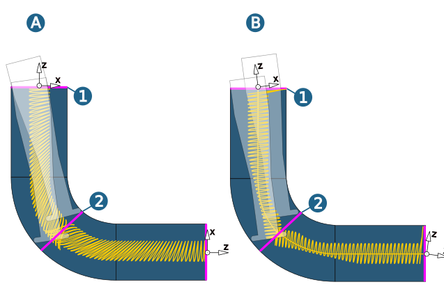
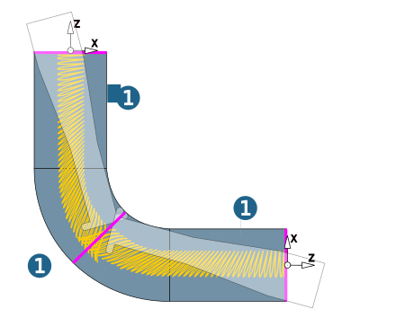

5-axis parameters
Tilt strategy
5X simultaneous (A): Collisions with the shank are avoided by tilting the tool around the cutting middle point. To be able to plunge as deeply as possible without any collision avoidance, the tool can be tilted with the desired tilt angle in the direction of the Tilt curve.
Fixed 3D (B): The tool axis always corresponds to the Z axis of the frame. The orientation of the frame allows the reachable depth to be influenced without any collision avoidance. In this tilt strategy, the tool is shifted laterally in order to avoid collisions.
|
Example |
5X Tube Finishing, Woodruff cutter, Strategy = Spiral, (A) 5X simultaneous, (B) Fixed 3D, Jobframe tilted 7 °, (1) Start profile, (2) End profile |
|  |
Tilt reference
Tilt curves
-
Available for Ballmill and Lollipop.
-
Optional selection.
-
Selecting tilt curves will overwrite the central curve's tilt curve function. The tool will then position itself facing a cladding curve around the tilt curve's intersection points with the temporary cross-sections.
Note
This is especially useful when there are highly pointed angles to the machining surfaces for a tool inclination towards the central curve. In most cases, it is sufficient to laterally move a copy of the central curve
Drive surfaces
-
Available for Woodruff.
-
Selection that is absolutely necessary.
-
During collision avoidance, drive surfaces (normal vectors ) maintain the tool contact and are used to solve problems concerning the poor surface quality of the model (for example, irregular normal vectors, gaps or overlaps). They are either part of the model surface or are surfaces with a suitable offset (to the model surface).
|
Example: |
5X Tube Finishing, strategy = Spiral, Woodruff Cutter (1) Model surfaces as Drive surfaces. |
|  |
Tilt angle
Desired tilt angle: Define the default angle for the tilt angle of the tool.
Max. tilt angle: Define the maximum permissible angle for the tilt angle of the tool.
Automatic segmenting
User def. segment limits
When using a parallel machining strategy, segment limits allow for partitioning into machining segments. In case the upper machining plane intersects one of these lines, a rapid is inserted to the clearance plane to enable the rotary axis to be turned backwards if needed.
Define segment limits preferably as simple lines in the top machining plane.
This option is only required for limited rotary axes.